L2
Shrink every weight toward zero.
ridge / weight decay✦ Short idea, then a plot, then questions
Read the teal box and the formula. That is the whole claim.
Turn λ, p, γ, or the checkpoint. The numbers are the evidence.
Theory first, then numbers. A miss is a hint. Open the book fold only if you need it.
Complete the section immediately above.
E is the data term. Ω is a preference. λ is a hyperparameter: do not fit it by gradient descent on the training set. Tune it on validation. λ = 0 is ordinary training. Too large a λ (or too small a dropout p, or too early a stop) underfits.
Shrink every weight toward zero.
ridge / weight decayDelete some weights.
lassoDelete activations for one step.
train maskRe-scale a minibatch, then γ û + β.
running stats at testDelete training time.
θ at t*Who picks λ? Training updates θ. Validation chooses λ, p, patience. Test is opened once.
Updates the weights. Do not use it to pick λ.
updates θChooses λ, dropout p, patience.
chooses λOpened once after the knobs are frozen.
final reportGoodfellow ch. 7: strategies that reduce test error, possibly at the expense of training error. Prince UDL ch. 9: explicit penalties on weights versus implicit ones (optimiser, stopping time, SGD noise).
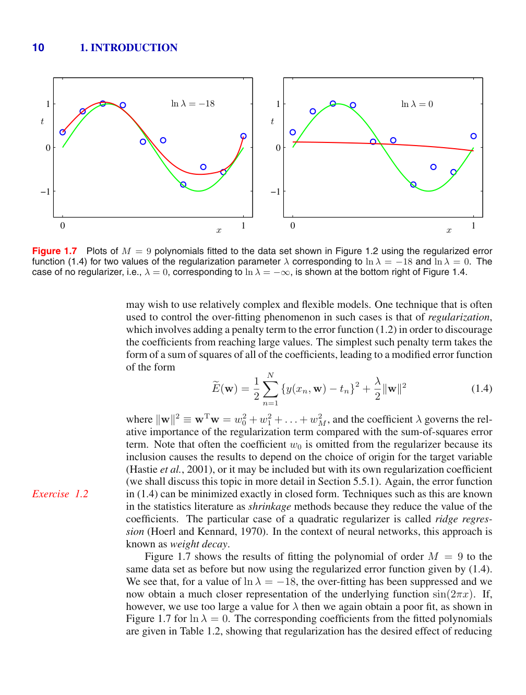
Ẽ(θ) = E(θ) + λ Ω(θ). Pick the expression first, then evaluate it.
E = 0.40λ = 0.10Ω = 2.0Ẽ(θ) = ?
0.40 + (0.10)(2.0)Ẽ(θ) = 0.40 + (0.10)(2.0) = ?
Complete the section immediately above.
Adding λ to every eigenvalue of XᵀX shrinks unconstrained directions hardest. The constraint ‖w‖₂² ≤ η is a disk, so loss ellipses usually touch off-axis: both weights survive.
Bishop PRML §3.1.4: Ẽ(w) = (1/2) Σn (yn − wᵀφn)² + (λ/2)‖w‖₂². Tiny eigenvalues of XᵀX are the ones shrinkage hits. λ → 0⁺ among interpolators selects the minimum Euclidean-norm solution. For Adam, fold λ into the loss and the adaptive denominator rescales the L2 gradient too — AdamW applies (1 − ηλ) after the adaptive step.
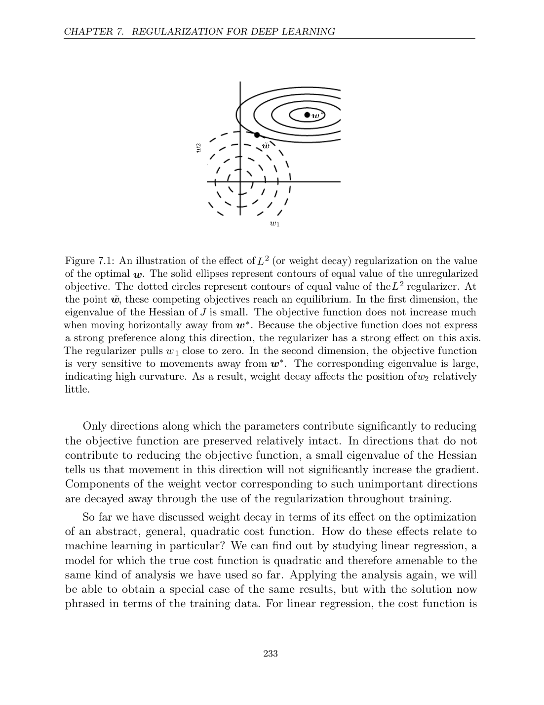
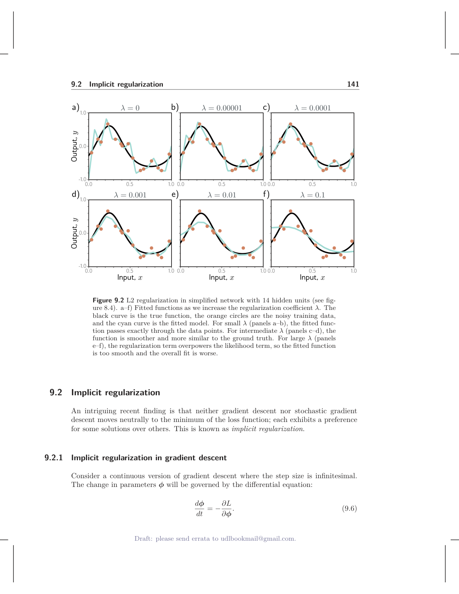
Dashed = true sine. Dots = six noisy training points. Solid = degree-9 ridge fit.
ŷ = w x. Points (1, 2) and (2, 3). Closed form ŵ = 8 / (5 + λ). Pick the plug-in, then evaluate.
ŵ = 8/(5+λ)λ = 0ŵ = ?
ŵ = 8/5ŵ = 8/5 = ?
ŵ = 8/(5+λ)λ = 1ŵ = 8/(5+1) = ?
Complete the section immediately above.
|z| > λ: move z toward 0 by λ. |z| ≤ λ: output 0. That is the exact minimiser of (1/2)(w − z)² + λ|w|.
Ωq = Σ |wj|q. q = 1 is still convex but has corners. Nondifferentiable at 0: the subgradient of |w| at 0 is [−1, 1]. Elastic net (L1 + L2) shares credit between correlated features; lasso prefers a vertex that keeps only one.
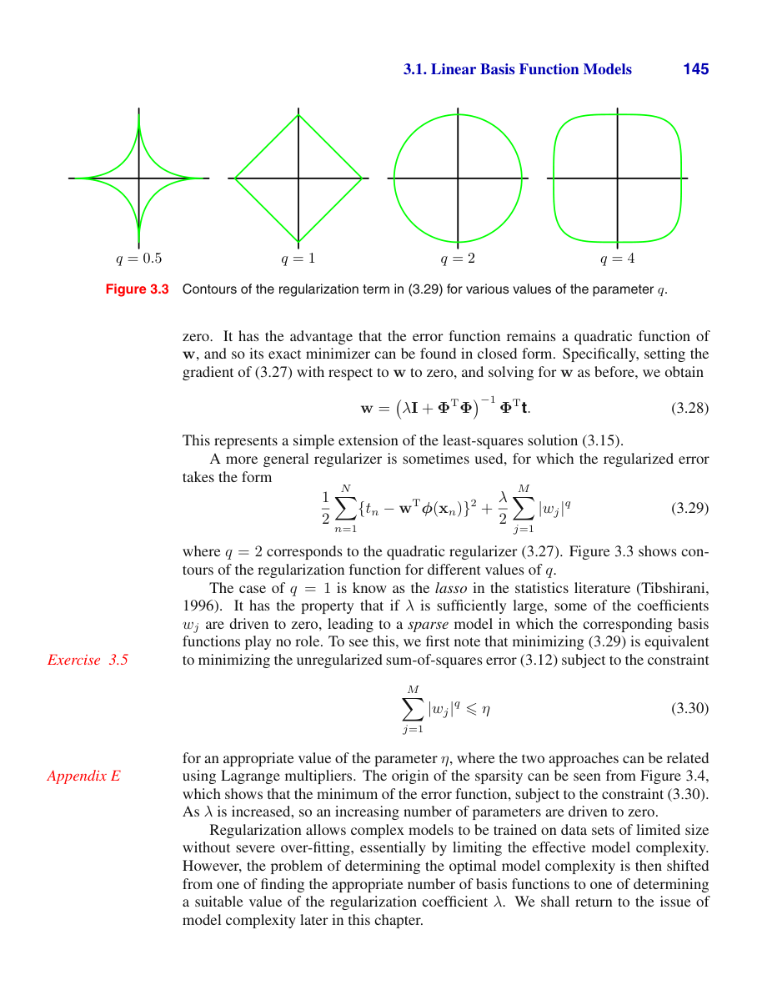
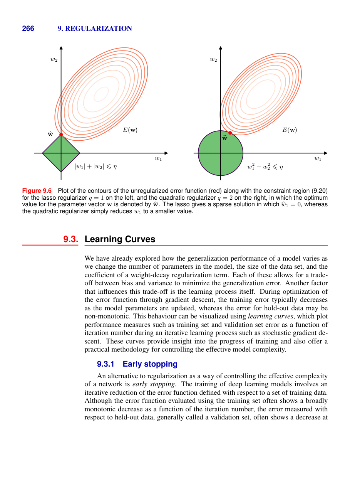
Grey ellipses: loss around OLS. Marker: first contact with the constraint. Drag η and watch L1 snap to an axis.
Tighten the budget until the teal marker sits on an axis. The coral marker on the disk stays off-axis.
Sλ(z) = sign(z) max(|z| − λ, 0). First write the expression, then evaluate.
λ = 2z = 1.5S2(1.5) = ?
sign(1.5) max(|1.5| − 2, 0)S2(1.5) = sign(1.5) max(−0.5, 0) = ?
λ = 2z = 3.0S2(3.0) = sign(3) max(3 − 2, 0) = ?
Complete the section immediately above.
A unit cannot rely on a particular neighbour being present, so fragile cancellations are discouraged. Typical keep probability p ≈ 0.5 on hidden units.
Srivastava et al. (2014); Goodfellow §7.12. Draw mi ~ Bernoulli(p). The original paper multiplied leftover weights by p at test. Inverted dropout divides by p when a unit is kept. Typical p: 0.8–0.9 on inputs, 0.5–0.8 on hidden. MC dropout (keep dropping at test) is a cheap uncertainty estimate — not the default.
| unit | h | m | h̃ = m h / p |
|---|---|---|---|
| 1 | 1.2 | 1 | 2.4 |
| 2 | −0.4 | 0 | 0 |
| 3 | 2.0 | 1 | 4.0 |
| 4 | 0.8 | 0 | 0 |
Kept units double. At test the same layer forwards (1.2, −0.4, 2.0, 0.8).
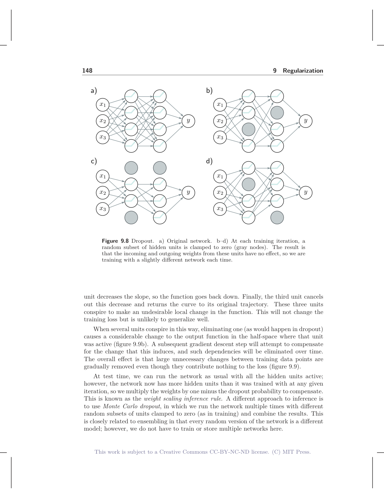
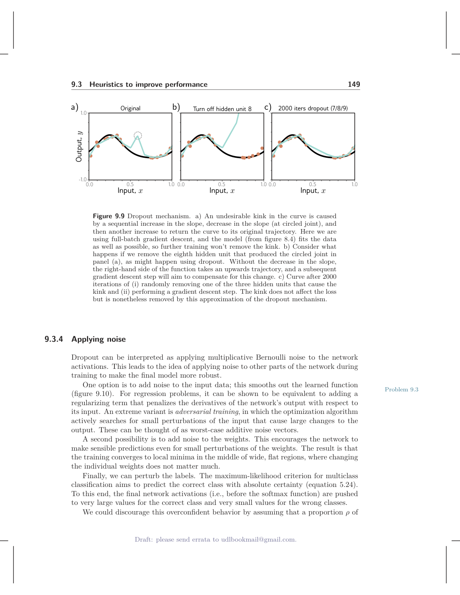
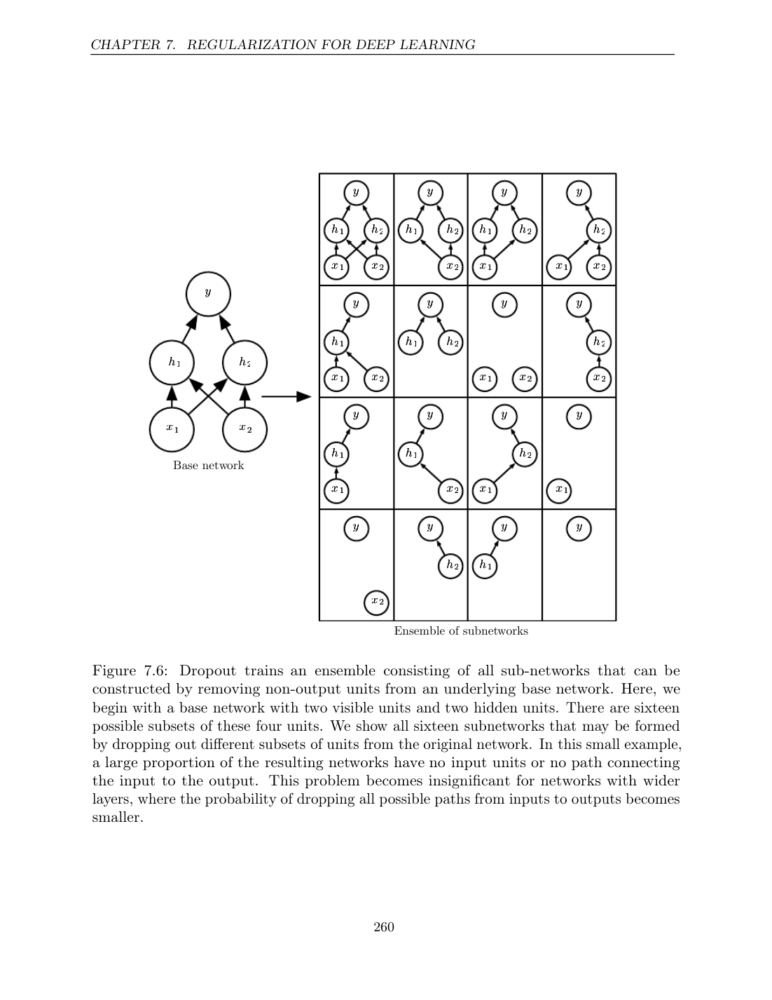
Small label = raw h. Big number = forwarded h̃. Toggle test: mask off, no 1/p.
Train: h̃ = m h / p. Write the expression for unit 1, evaluate it, then do unit 2.
p = 0.5h = 1.2m = 1h̃₁ = ?
(1)(1.2) / 0.5h̃₁ = (1)(1.2) / 0.5 = ?
p = 0.5h = −0.4m = 0h̃₂ = (0)(−0.4) / 0.5 = ?
Complete the section immediately above.
Use the population variance (divide by N). One (γ, β) pair per channel. Train uses batch stats; test uses running stats.
If the net wants the identity it can set γ = √(σ²+ε) and β = μ. Two stories: internal covariate shift (Ioffe & Szegedy) versus a smoother loss (Santurkar et al.). Operationally you need neither to implement the four lines. Smaller batches → noisier BN. Very small batches are why LayerNorm won in transformers.
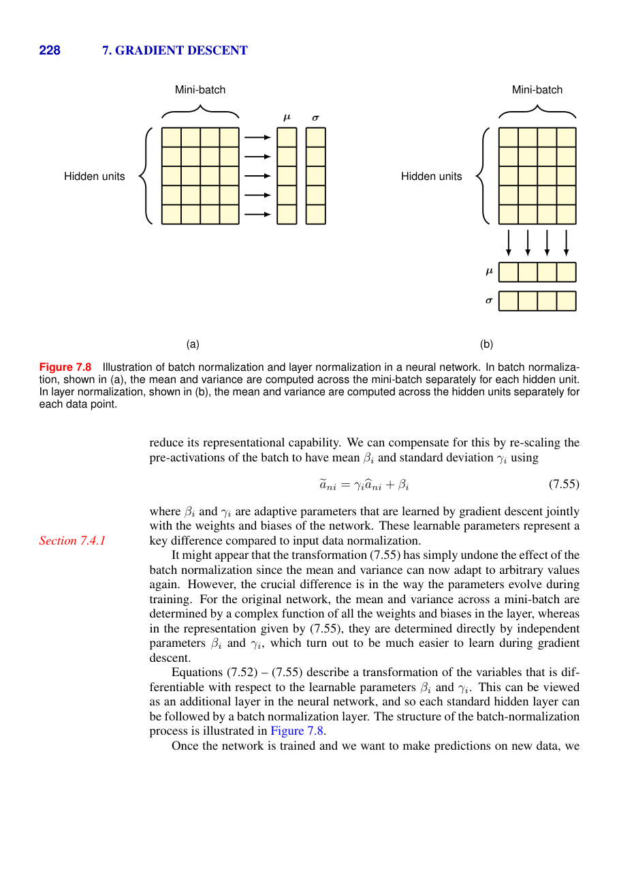
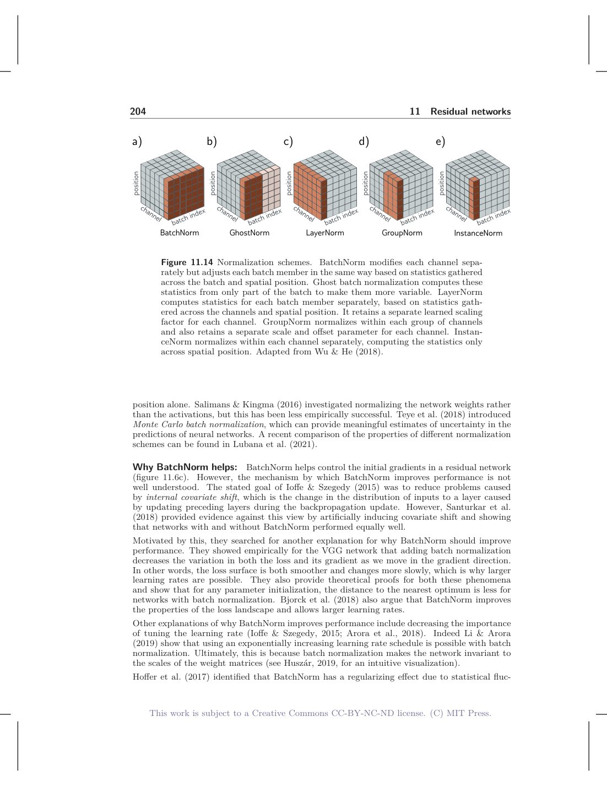
Navy band = ±σ around μ. Coral = raw u. Teal = y after scale-and-shift. Drag u₄.
Drag u₄ in train mode and watch μ move. Switch to test: μ stays at the running value 4.
u = (1, 3, 5, 7), ε = 0, γ = 2, β = 1. Population variance: divide by N = 4. Expression, then number, then y.
u = (1, 3, 5, 7)N = 4μ_B = ?
(1 + 3 + 5 + 7) / 4μ_B = 16 / 4 = ?
μ_B = 4u = (1, 3, 5, 7)σ_B² = [(1−4)² + (3−4)² + (5−4)² + (7−4)²] / 4 = ?
u₁ = 1μ = 4σ² = 5γ = 2β = 1y₁ = γ (u₁ − μ) / √σ² + β = ?
Complete the section immediately above.
Never take the gradient of validation. Do not pick t* with the test set and then report that number. For a linear net with quadratic error, early stopping is roughly ridge with λ related to 1/(training time).
Gradient descent on a quadratic is slowest along the small-eigenvalue directions — the same directions ridge damps. Stopping before those directions finish is like leaving them shrunk.
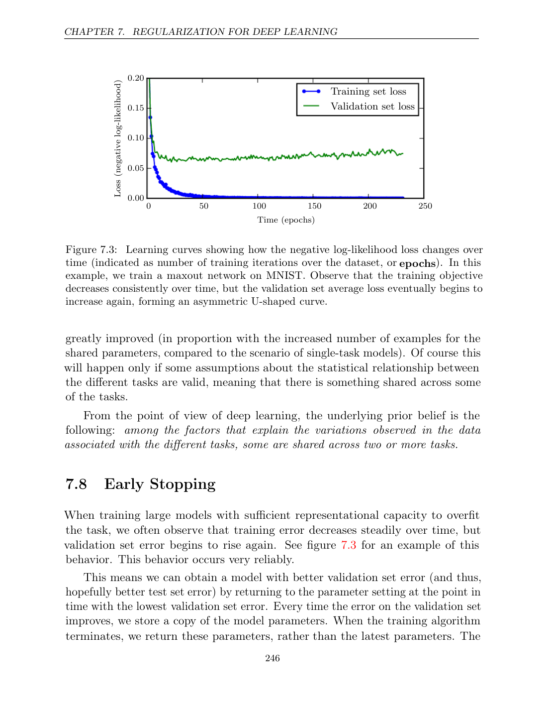
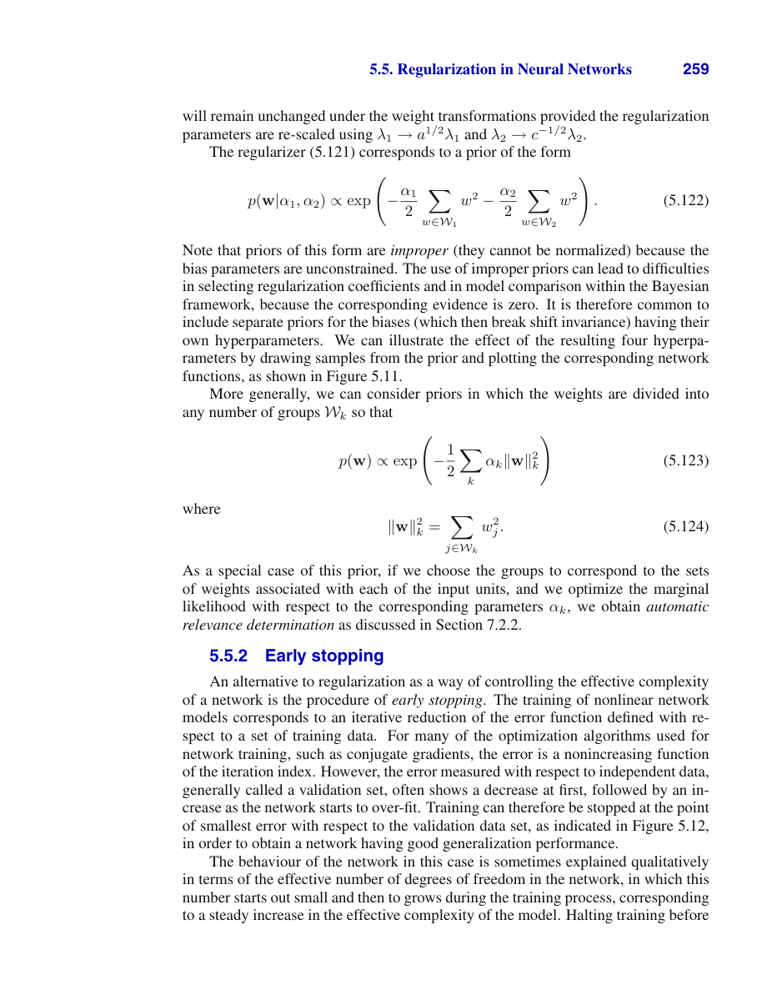
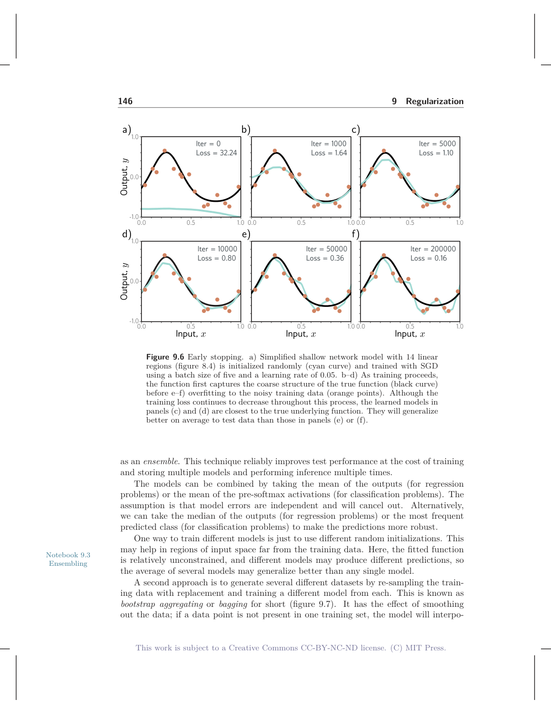
Coral = training MSE. Teal = validation MSE. The star is the checkpoint to keep.
Click through 1 → 20 → 80 → 300. Ask which error is still falling at 300, and which has already turned.
Lval: 1 → 0.40, 20 → 0.18, 80 → 0.12, 300 → 0.21. Write the rule, then the epoch.
L_val(1)=0.40L_val(20)=0.18L_val(80)=0.12L_val(300)=0.21t* = ?
arg min L_val0.40, 0.18, 0.12, 0.21t* = ?
Complete the section immediately above.
One-line map. L1 deletes weights. L2 shrinks weights. Dropout deletes activations at train. BN re-scales activations. Early stopping deletes training time.
Residual conv net: batch norm (or LayerNorm) on, weight decay ~ 10⁻⁴, early stopping, dropout only if you still overfit. Linear model on many correlated features: lasso or elastic net, not dropout. Transformer: LayerNorm, residual dropout, weight decay, early stopping. The architecture already is a regulariser. Penalties sit on top.
Same six points every run. Dashed = true sine. Preferred setting: low unseen error, not the lowest training loss.
0 configurations evaluated
Answer the previous question first.
Complete the section immediately above.
Four cases. A and B: high–high is underfit, low–high is overfit. C and D separate L1 from dropout.
train .210 val .238
Both losses plateau high. λ is huge.
train .003 val .146
Degree 9, λ = 0, 300 epochs.
w = (1.89, 0.00)
Two features; the second is a decoy.
train mask · test full net
Predictions change if you forget to switch mode.